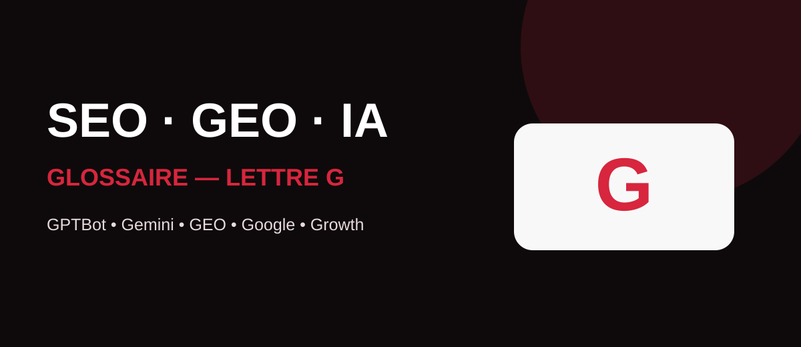

La visibilité numérique ne se limite plus aux résultats classiques de Google. Les moteurs génératifs, les modèles d’IA et les outils de mesure font désormais partie du quotidien des équipes SEO. Ce glossaire MinoSeo explique chaque notion avec une approche claire, concrète et orientée stratégie.

GPTBot
GPTBot est un robot d’exploration d’OpenAI. Il peut parcourir des contenus web susceptibles d’être utilisés pour contribuer à rendre les modèles génératifs d’OpenAI plus utiles et plus sûrs. Les éditeurs peuvent gérer son accès via le fichier robots.txt.
Il faut distinguer GPTBot d’OAI-SearchBot, utilisé pour la recherche dans ChatGPT. Pour une stratégie GEO, cette distinction est importante : contrôler l’entraînement et permettre la découverte dans une expérience de recherche IA correspondent à deux objectifs différents.
Generative Engine Optimization
Le Generative Engine Optimization (GEO) désigne les pratiques visant à améliorer la compréhension, la sélection et la citation potentielle d’une marque ou d’un contenu par les moteurs génératifs. Le GEO complète le SEO plutôt qu’il ne le remplace.
Les fondamentaux restent solides : contenus originaux, expertise démontrable, informations factuelles faciles à extraire, architecture claire, cohérence des entités et réputation. Dans Google, les bonnes pratiques SEO restent également fondamentales pour la visibilité dans les fonctionnalités de recherche générative.
Google DeepMind
Google DeepMind est l’organisation de recherche et développement en intelligence artificielle de Google. Ses travaux couvrent notamment les modèles d’IA avancés, le raisonnement, la science et les systèmes capables de comprendre plusieurs types d’informations.
Pour les professionnels du SEO et du GEO, DeepMind illustre l’évolution des technologies qui transforment progressivement la recherche d’information, les assistants et les expériences conversationnelles.
Gemini
Gemini désigne la famille de modèles et d’expériences d’intelligence artificielle de Google. Ces systèmes peuvent traiter et générer différents formats d’information selon les versions et produits concernés.
Pour une marque, l’enjeu n’est pas de « rédiger pour Gemini », mais de publier des informations fiables, structurées, cohérentes et suffisamment distinctives pour être comprises dans des parcours de recherche de plus en plus assistés par l’IA.
GPT
GPT signifie Generative Pre-trained Transformer. Il s’agit d’une famille de modèles d’intelligence artificielle conçus pour traiter et générer du langage, avec des capacités qui peuvent également s’étendre à d’autres modalités selon les modèles.
En SEO, les GPT peuvent accélérer la recherche, la classification, les briefs, l’analyse ou la reformulation. Ils ne remplacent toutefois ni les données fiables, ni l’expertise métier, ni la validation humaine nécessaire à un contenu différenciant.
Growth Hacking
Le Growth Hacking est une démarche de croissance fondée sur l’expérimentation rapide, la mesure et l’identification de leviers capables d’accélérer l’acquisition, l’activation, la rétention ou la recommandation.
Appliqué au SEO, il peut conduire à tester des formats, des architectures ou des opportunités éditoriales. La vitesse d’expérimentation ne doit cependant jamais justifier des pratiques risquées ou une dégradation de la qualité.
Growth driven design
Le Growth Driven Design envisage le site web comme un produit à améliorer en continu plutôt que comme un projet figé. Les décisions de design et de contenu s’appuient sur les données d’usage, les objectifs commerciaux et des cycles d’optimisation.
Cette logique se combine bien avec le SEO : on peut améliorer progressivement les pages prioritaires, l’expérience utilisateur, les conversions et le maillage interne en observant les performances réelles.
guest blogging
Le guest blogging consiste à publier un contenu sur un site tiers, généralement sous forme de contribution éditoriale. Il peut développer la notoriété, toucher une nouvelle audience et, dans certains contextes, générer des liens ou des mentions.
La qualité prime sur le volume : une contribution pertinente sur un média cohérent avec votre expertise a davantage de valeur qu’une multiplication d’articles standardisés uniquement destinés à obtenir des backlinks.
Google shopping
Google Shopping regroupe des expériences permettant aux internautes de découvrir et comparer des produits dans l’écosystème Google. La qualité des données produit, les prix, la disponibilité, les images et la cohérence des informations jouent un rôle central.
Pour un e-commerçant, le SEO produit et les flux marchands doivent être pensés ensemble afin d’améliorer la compréhension de l’offre et sa visibilité sur les surfaces pertinentes.
Google Tag manager
Google Tag Manager (GTM) est un système de gestion de balises permettant de déployer et administrer des scripts de mesure ou de marketing via un conteneur. Il facilite la collaboration entre marketing, analytics et développement.
GTM peut aussi servir à générer certaines données structurées en JavaScript, mais toute implémentation doit être testée. Une gouvernance rigoureuse évite les doublons, les erreurs de déclenchement et les problèmes de mesure.
Google BERT
BERT (Bidirectional Encoder Representations from Transformers) est une architecture de traitement du langage naturel qui a contribué à améliorer la compréhension du contexte des mots et des requêtes. Google a intégré BERT à ses systèmes de recherche à partir de 2019.
Pour le rédacteur SEO, la conséquence pratique est simple : privilégier un langage naturel et une réponse réellement adaptée à l’intention plutôt que répéter artificiellement une expression exacte.
Glissement sémantique
Le glissement sémantique désigne le déplacement progressif du sens ou du sujet principal d’un contenu vers un autre univers lexical. En SEO, il peut apparaître lorsqu’une page accumule des développements périphériques au point de brouiller son intention centrale.
Un champ lexical riche est utile, mais il doit rester cohérent. Chaque section doit contribuer à la réponse attendue par l’utilisateur et renforcer le sujet principal plutôt que le diluer.
Google caffeine
Google Caffeine est le nom d’une refonte majeure de l’infrastructure d’indexation de Google annoncée en 2010. Elle a permis de traiter et rendre disponibles les contenus nouveaux ou mis à jour de façon plus continue qu’avec l’ancien fonctionnement par couches.
Caffeine est surtout une notion historique importante pour comprendre l’évolution vers un Web exploré et indexé à grande échelle avec une fraîcheur accrue.
Google analytics
Google Analytics mesure les interactions des visiteurs avec un site ou une application : sessions, pages consultées, événements, acquisitions et conversions selon la configuration retenue.
En SEO, Analytics aide à comprendre ce que font les visiteurs après leur arrivée. Il complète Search Console, qui se concentre davantage sur la performance dans Google avant le clic. Les deux outils n’utilisent pas les mêmes métriques et leurs chiffres ne doivent donc pas être comparés comme s’ils étaient identiques.
Google Search Console
Google Search Console est l’outil de Google destiné aux propriétaires de sites pour suivre leur présence dans la recherche : clics, impressions, requêtes, pages, indexation et différents diagnostics techniques.
En 2026, Google propose également des vues dédiées à la visibilité dans ses fonctionnalités d’IA générative. Pour une stratégie SEO/GEO, Search Console devient ainsi un point de contrôle majeur pour suivre à la fois la recherche traditionnelle et certaines expériences génératives de Google.
Tableau de synthèse des termes en G
| Famille | Notions | Enjeu |
|---|---|---|
| IA & GEO | GPTBot, GEO, DeepMind, Gemini, GPT | Compréhension, découverte et nouveaux usages de l’IA. |
| Croissance & contenu | Growth Hacking, Growth Driven Design, Guest Blogging | Acquisition, expérimentation et autorité. |
| Google & mesure | Shopping, Tag Manager, BERT, Caffeine, Analytics, Search Console | Visibilité, compréhension, instrumentation et performance. |
| Sémantique | Glissement sémantique | Maintenir une intention et une cohérence éditoriale fortes. |
Relier SEO, GEO, IA et données
Ces notions montrent à quel point le référencement moderne est devenu transversal. Une stratégie performante doit articuler qualité éditoriale, technique, données, autorité et compréhension par les systèmes d’IA. Le GEO ajoute de nouveaux points de contact, mais il s’appuie largement sur des fondations SEO solides.
MinoSeo accompagne les entreprises depuis plus de 15 ans en SEO et GEO pour transformer ces concepts en actions mesurables : audit, stratégie éditoriale, optimisation technique, netlinking, suivi de performance et préparation des contenus aux nouveaux parcours de recherche assistés par IA.
Préparez votre visibilité pour Google et les moteurs génératifs
Identifiez les optimisations SEO/GEO prioritaires pour rendre votre marque plus visible, compréhensible et crédible.
Demander un audit gratuit